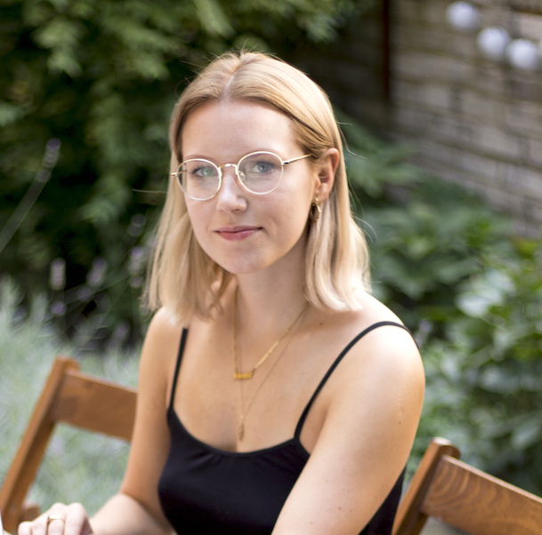

S láskou k vědě či technice a citem pro sociální sítě.
Junior výzkumník - VŠCHT Praha (2021 - současnost)
LCA studio, práce se softwarem GaBi
Manažer pro sociální média - VŠCHT Praha (2018 - 2021)
Tvoření obsahu pro sociální sítě VŠCHT Praha
Environmental Trainee - Nestlé (2020 - 2021)
Příprava materiálů zaměřených na udržitelnost
Community and Content Manager - Freelance pro Decathlon (2018 - 2020)
Ing. - VŠCHT Praha (2019 - 2022)
Průmyslová ekologie a toxikologie
Výzkumná stáž - Instituto Supérior Técnico (2021)
LCA stáž, práce se softwarem SimaPro
Bc. - VŠCHT Praha (2015 - 2019)
Chemie a analýza potravin
Google Project Management (2021)
Pište jako pornomagnát - Otto Bohuš (2019)
Python - Pyladies (2018)
Workshopy: Salesforce (Czechitas, 2018), TJ Bot Garáž (2018)